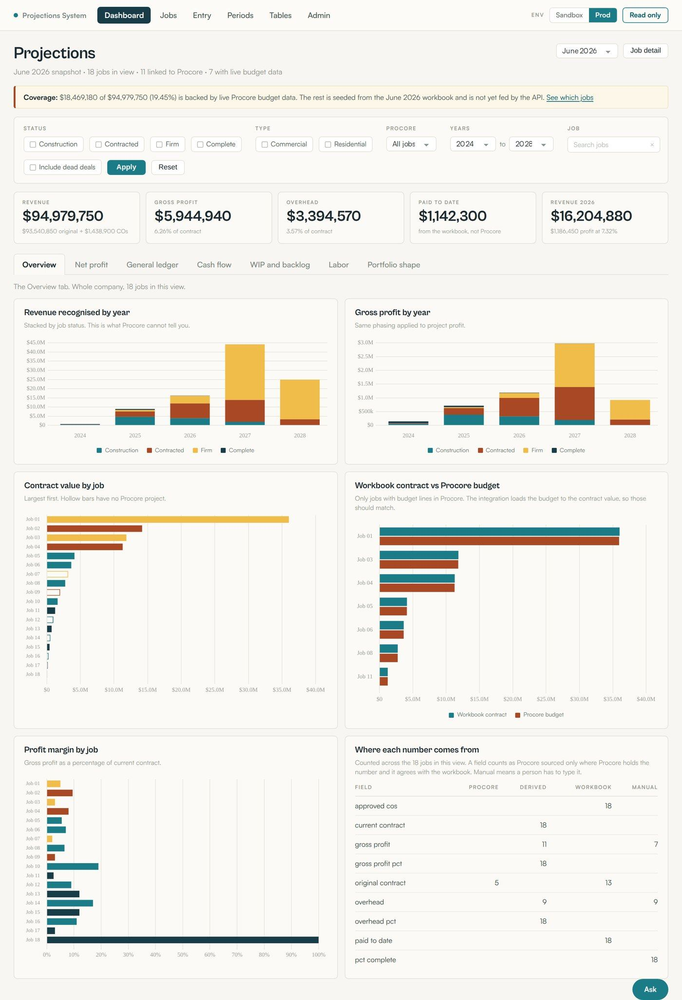
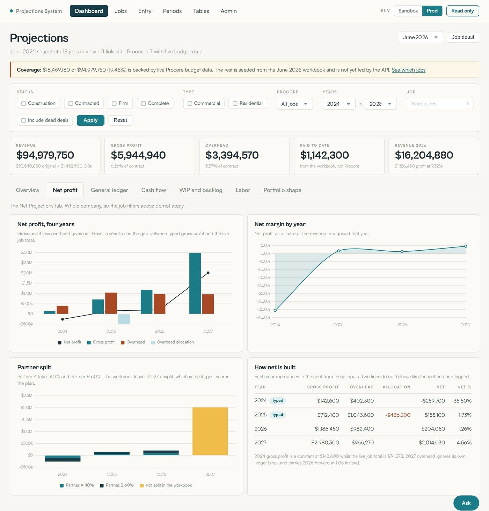
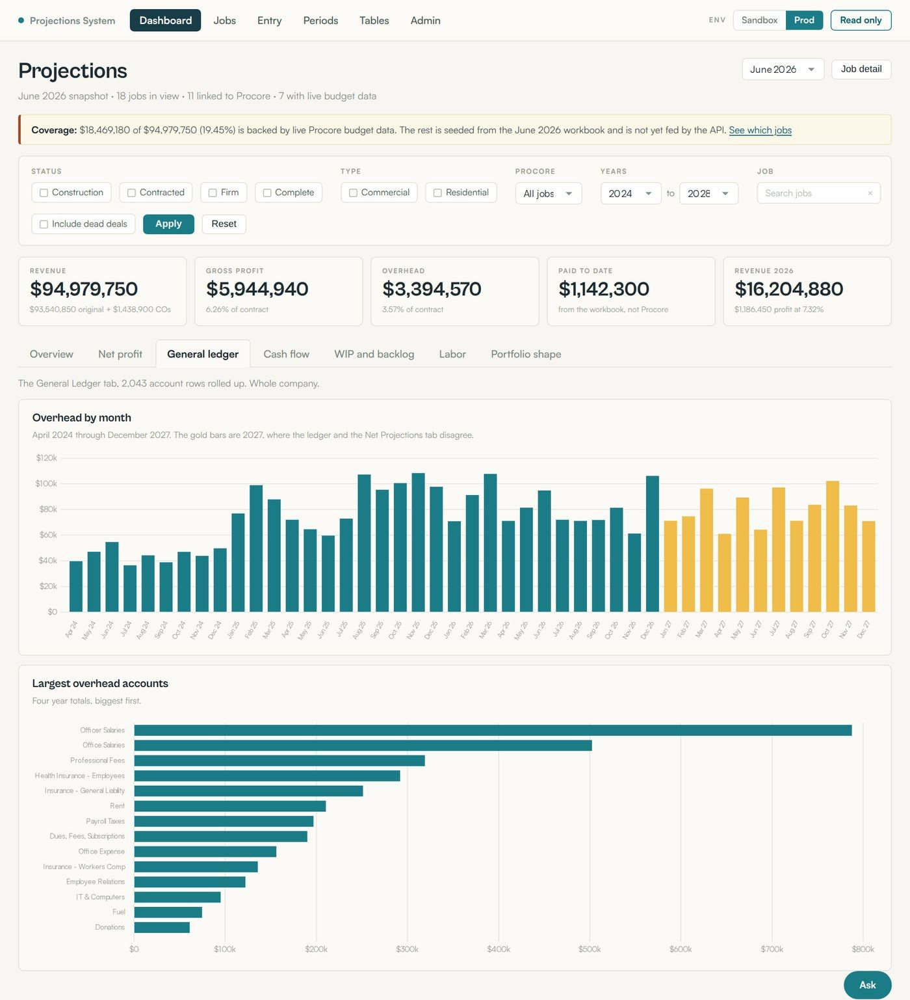
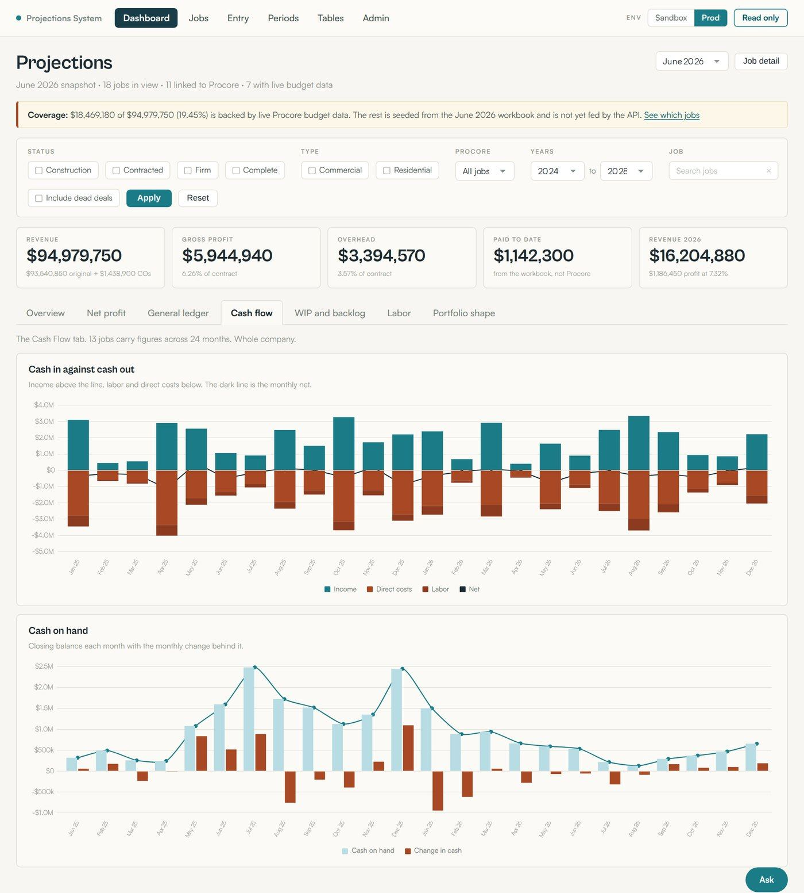
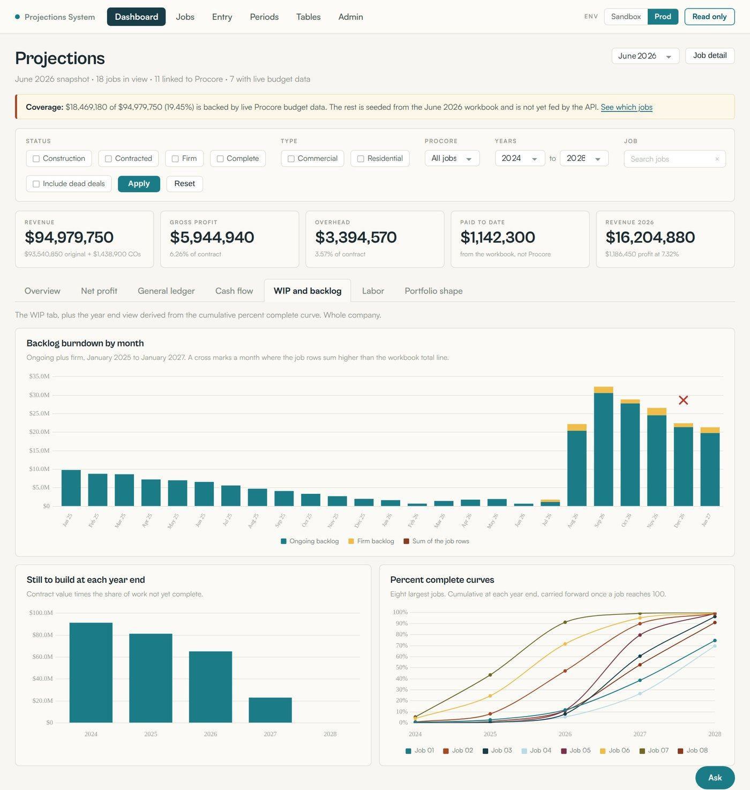
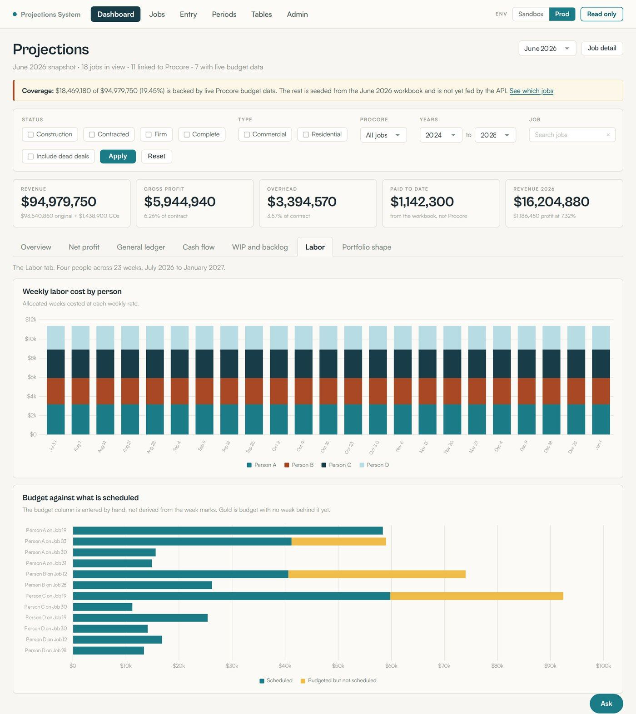
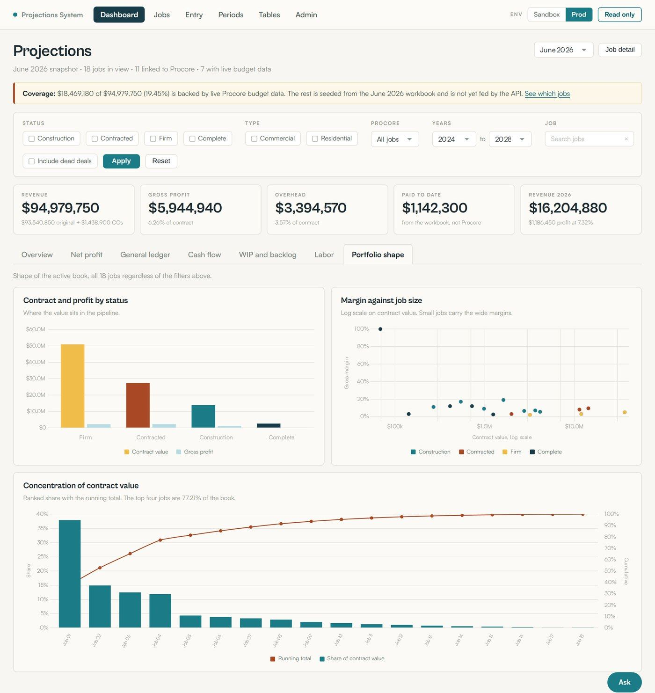
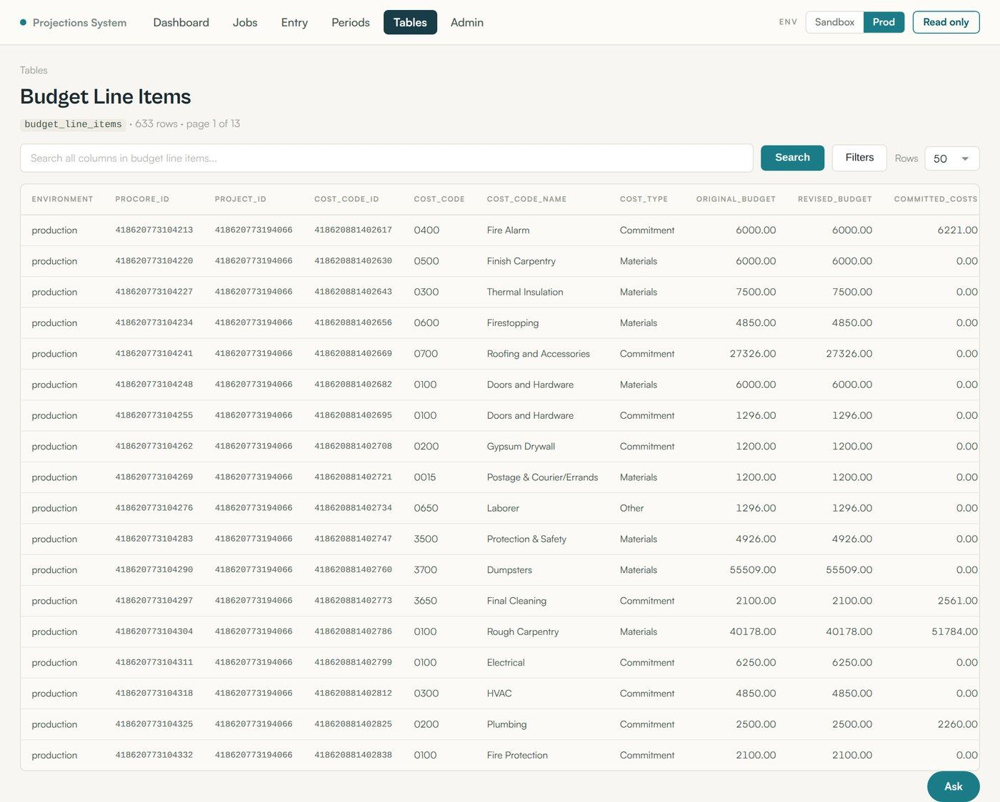
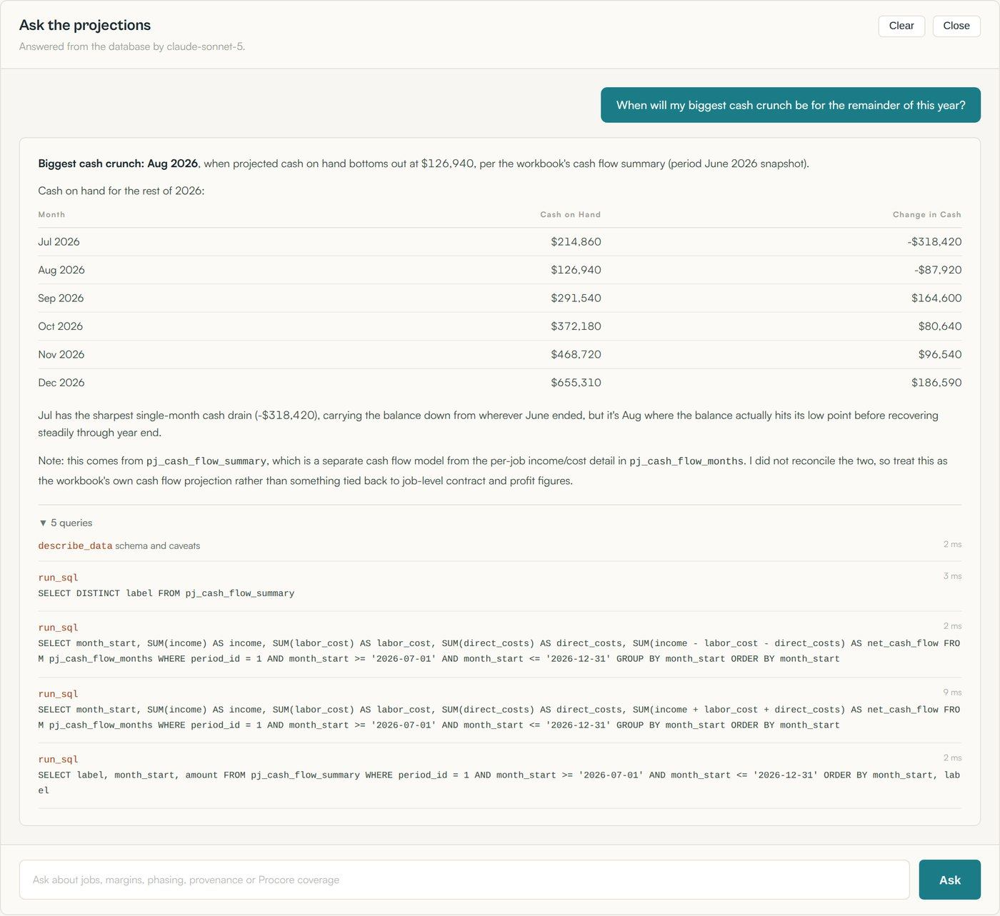

The use case
Our client, a commercial construction general contractor we'll refer to as the Construction Client, forecast its entire business from one Excel workbook. Every active job, every dead deal, four years of general ledger overhead, monthly cash flow, weekly labor, and the partner profit split all lived in linked tabs that one person maintained by hand. It worked, in the sense that the numbers came out. It also took the better part of a business day each month to update, it could not be queried, two people could not open it at once, and it carried formula errors nobody had time to hunt down.
I replaced it with a web application. The workbook logic was reproduced formula by formula in JavaScript, verified against the original to the cent, and moved into a relational schema. Where the client already had data in Procore, the app now pulls it through the Procore REST API. Where Procore does not hold the data, the app gives them a spreadsheet-style grid to type it into, and records who typed it. The CEO opens a browser instead of a workbook, and the monthly cycle that used to take 8 to 10 hours now takes a fraction of that.
On top of that sits an AI layer built on Anthropic Claude, with read-only access to the same database and its own tools. It answers questions nobody built a screen for. Ask it when the biggest cash crunch lands for the rest of the year and it writes the queries, finds the trough, and shows every query it ran to get there.
The problem
The workbook was not a bad piece of work. It was a very good piece of work that had outgrown its container. Four specific things were breaking.
One person was the system
The workbook had one owner. Percent complete on every job, overhead by general ledger account by month, cash flow phasing, labor allocation, and the partner split were all keyed in or adjusted by that one person. If they were on vacation, the forecast froze. Nobody else could safely touch the file, because the cross-tab formulas were not obvious from the outside.
Data existed in Procore and was retyped anyway
The client runs Procore for project management and budgeting. Contract values, change orders, budget line items, and direct costs already lived there. None of it flowed into the forecast. It was read off one screen and typed into another, which is both slow and a place for transcription errors to enter.
Nothing was queryable
A question as simple as "which jobs are dragging our margin" required scrolling and eyeballing. There was no way to filter to firm backlog only, or to compare this month against last month, or to see how much of the book was concentrated in the top four jobs.
There were real errors, and no way to find them
Reading the workbook formula by formula surfaced several genuine defects: a hardcoded gross profit figure that no longer matched the live job total, a partner split left blank for the largest year in the plan, a job omitted from a backlog subtotal, three jobs whose contract values disagreed between tabs, and a formula that squared a value it was meant to multiply. None of these were visible from the front of the workbook.
What we built
The platform is a Node.js and Express application with server-rendered views, a MySQL database, and Chart.js for the visuals. It runs behind authentication and deploys automatically on push. There are six moving parts.
1. The projections engine
This is the core of the work and the part that had to be exactly right. Every formula in the workbook was traced and reimplemented as a JavaScript module: revenue recognition by year from the cumulative percent complete curve, gross profit phasing, overhead allocation, the general ledger rollup, net profit, net margin, backlog burndown, and the partner split.
The engine is held to a reconciliation harness that recomputes values from the database and compares them against the original workbook. It currently compares 270 values with zero mismatches, and a separate tab-level suite runs 21 assertions across the net projections, work in progress, labor, and cash flow tabs.
The four known workbook defects are deliberately preserved, not corrected. Silently fixing a number the CEO has been reporting for a year would be the wrong move. Instead the app pins the workbook value, reproduces it, and flags it in the interface with a note explaining the discrepancy so a human can decide.
2024 gross profit doesn't match the live jobs
- What we found
- 2024 carries a typed gross profit of $142,600 while the live job total computes to $74,278.
- Why it matters
- The year's net profit is built on a number the jobs no longer support.
- What the app does
- Reproduces the workbook value, flags the gap in the interface, and leaves the decision to a human.
2. The dashboard
Seven views over the same filtered dataset. A persistent KPI strip across the top carries revenue, gross profit, overhead, paid to date, and current year revenue, and every figure below responds to the same filter bar: job status, commercial or residential, Procore link state, year range, individual job, and whether to include dead deals.
The overview answers the two questions the CEO asks first. How much revenue does each year carry, and which jobs are carrying the margin. The panel that matters most for trust counts, field by field across all 18 active jobs, how many values are Procore-sourced, derived, seeded from the workbook, or typed by a person. Nothing is described as Procore-sourced unless Procore actually holds the number and it agrees with the workbook.

The net profit view reproduces the workbook net projections tab and then does something the workbook could not: it shows how each year computes from its inputs, and it labels the two years whose gross profit is typed rather than derived. The workbook bugs are surfaced instead of buried.

The general ledger view rolls up 2,043 account rows: 52 individual expense accounts, each broken out by month, running 45 consecutive months. Any month is clickable, and every bar can be walked back to a specific account in a specific month in the original file. A ranked chart totals each account across the full four years, biggest first, which answers a question that previously required building a pivot table: which fixed costs actually move overhead.

The cash flow view draws cash in against cash out across 24 months with the monthly net overlaid, and a second chart tracks the closing balance. This is the view that turns a phasing assumption into a visible cash trough.



The portfolio view is a view the workbook never had. Margin against job size on a log scale makes the pattern immediate: small jobs carry the wide margins, large jobs carry the thin ones. The concentration chart shows the top four jobs are 77.21 percent of the book, which is a risk statement no spreadsheet cell was making.

3. Data entry that replaces the workbook, not just mirrors it
Roughly two thirds of the model is not in Procore and never will be: percent complete judgments, overhead by account by month, cash flow phasing, weekly labor allocation, and the partner split. Those need a first-class entry experience or people will keep opening Excel.
So the app has spreadsheet-style grids for each. They accept paste from Excel, calculate row and column totals live, keep an edit history, and lock months that are already closed actuals so a past period cannot be silently rewritten. Every edit is written to an audit table with the field, the old value, the new value, and who made the change.
There is also a period model. The workbook was a monthly snapshot, so the app carries periods, a review screen for a new period, and a comparison view between any two periods so the month-over-month movement is a query rather than a diff of two files.
4. The Procore integration
A read-only client against the Procore REST API mirrors projects, budget views, budget line items, cost codes, work breakdown structure segments, direct costs, companies, and identities into local tables, with every request and raw response logged for replay and debugging. The mirror currently holds 633 budget line items and 2,242 cost codes.

The integration also surfaced two things worth knowing. First, jobs do not join to Procore on job number, so the join is on name with a manual link editor for the exceptions. Second, and more important, coverage was far thinner than anyone assumed: of 18 active jobs, 11 are linked to a Procore project and only 7 carry live budget data, which is $18.5 million of the $95.0 million book, or 19.45 percent of contract value. That number is stated on the dashboard in a banner, not tucked into a report. An integration that quietly implies full coverage is worse than no integration.
5. Provenance, so no number is anonymous
Every field on every job carries a source: Procore, derived, workbook, or manual. A field only counts as Procore-sourced when Procore holds the value and it agrees with the workbook. Rather than presenting shaky figures as authoritative, the app labels them.
6. An AI layer that answers questions directly from the data
Every screen described so far answers a question somebody already knew to ask. The problem with any dashboard is that it can only answer the questions its author anticipated. Real forecasting questions arrive in plain English, they arrive once, and they are rarely the ones on the menu.
So the last layer is an assistant built on Anthropic Claude, sitting directly on top of the same database. It is a tool-using agent with read access to the model, and it composes its own queries to answer whatever it is asked. It is given the live database schema, hand-written notes explaining what a schema dump cannot express, and eleven tools, including a read-only SQL escape hatch.
That last tool needed the most care. The guard is layered on purpose: the statement must be a single read query, write keywords are rejected outright, a row limit and a time cap are enforced, and the query runs inside a read-only transaction so the database engine itself refuses a write even if every check above it were somehow defeated.

Every tool call is logged to the interface as it happens, with the exact SQL, the row count returned, and the elapsed milliseconds, and the whole trace stays expandable underneath the answer. That is the part that makes it usable in a room where money decisions get made. The answer is never take my word for it. It is: here is the query, here is what it returned, check it yourself.
The practical effect is that the value of the data stopped being capped by what I thought to build. The CEO can ask which jobs are most exposed if the schedule slips a quarter, or what changed in the forecast since last month, and get a real answer in seconds with the working shown. In the spreadsheet, each of those was a request that went to one person and came back later, if at all.
How we approached it
Reproduce before improving
The first milestone was not a feature. It was reproducing the workbook exactly, bug for bug, with an automated check proving it. Until the app could produce the same numbers the CEO already trusted, no new capability was worth building. That constraint is what makes the 270-value reconciliation harness the most important file in the repository.
Verify, do not assume
Every claim in this write-up was checked against a primary source: the engine run, a database query, or a screenshot examined after it was taken. Along the way that discipline caught one of my own earlier conclusions being wrong, and reporting the correction was more useful than defending the original answer.
Surface disagreements instead of resolving them silently
Where two sources disagree, the app shows both and marks the conflict. Workbook contract value against Procore budget. Job row sums against backlog totals. Typed gross profit against the live job total. Each one became a specific question for the people who own that data, rather than a decision made unilaterally in code.
Make everything queryable
Every grid in the application is searchable, filterable, and sortable, including the raw API mirror tables. The whole point of leaving the spreadsheet was to stop scrolling and start asking questions. The AI layer is the same idea taken to its end: if the data is clean, documented, and provenance-labelled, a person should be able to ask it anything in plain English without waiting on a developer to build a screen first.
Results
The time saving is the headline, but the durable win is different. The forecast is no longer one person and one file. It is a schema, a tested engine, a set of provenance labels, and an audit trail. Anyone with access can ask it a question, and every number it returns can be traced to where it came from.